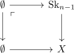
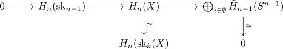

n-th homology of an k-dimensional cw complex for n > k
Proposition
Let $(X, \emptyset, \mathrm{SK}_n(X))$ be a n-dimensional CW-Complex. Let $n > k$ be natural numbers, then it holds for the singular homology, that
\begin{align*}
H_n(X) = 0
\end{align*}
Proof
consider the exact sequence of homology for


Thus by sandwhiched by zero object and isomorphism, we conclude, that
\begin{align*}
H_n(\mathrm{sk}_{n-1}) \cong H_n(\mathrm{sk}_{n})
\end{align*}
Since $\mathrm{sk}_{n-1}$ is a \(n-1\)-dimensional cw complex, this reduced by inductive reasoning to
\begin{align*}
H_n(\mathrm{sk}_{n}) \cong& H_n(\mathrm{sk}_{n-1}) \\
... \\
\cong& H_n(\mathrm{sk}_{-1}) \\
=& H_n(\emptyset) \\
=& 0
\end{align*}